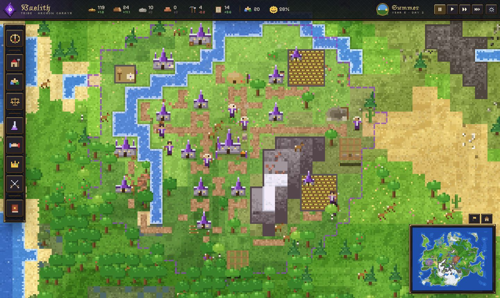
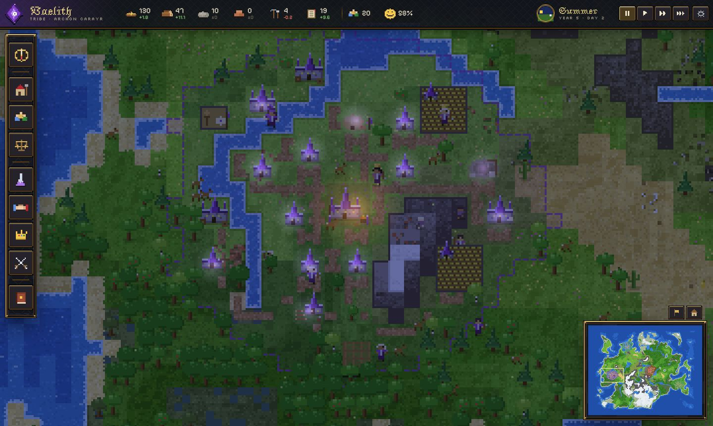
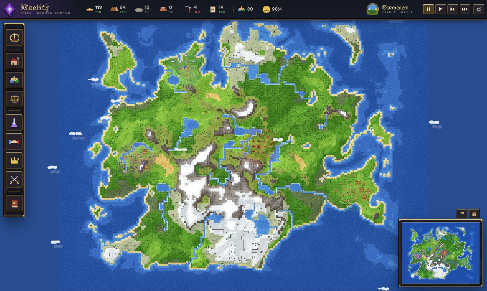
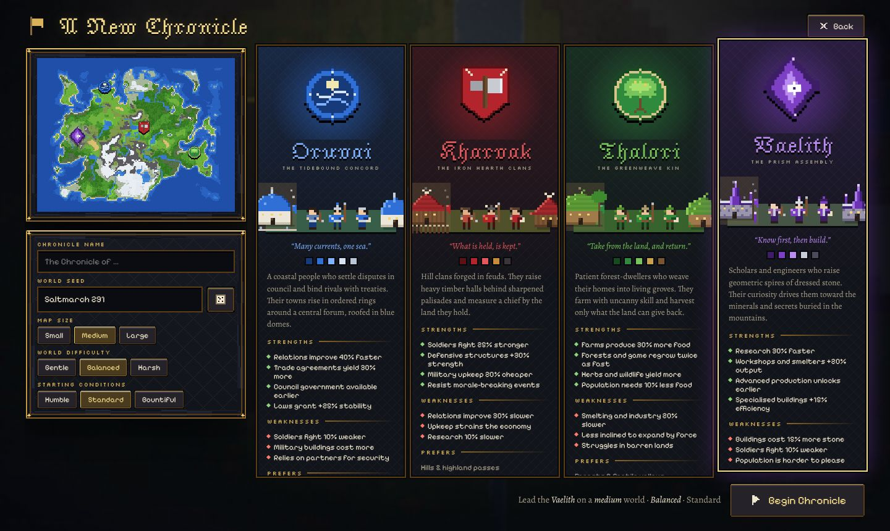
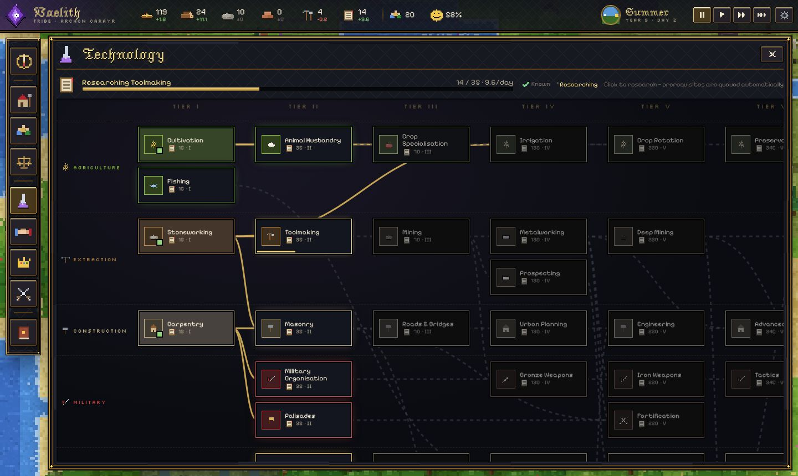
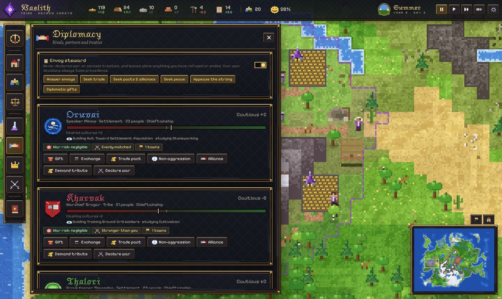

Choose a people
Each tribe builds, thinks and fights differently. Their towns look different, their rulers want different things, and the same land rewards each of them in its own way.
A world that keeps living
Nothing waits for you. Every person in every town is simulated, and the rival rulers plan, trade, scheme and go to war whether or not you are watching.
From hearth to empire
Every sprite, tile, icon and ornament is drawn by code at runtime. There is not a single image file in the game.






How to play
- Feed and house your people. Assign workers to foraging, hunting and farming; build huts before families run out of room.
- Research and build. Stone tools, farming and oral tradition open the way to quarries, schools and councils.
- Advance through six stages. Each needs people, knowledge and institutions. The Advisor shows what is missing.
- Deal with your neighbours. Trade, sign pacts, answer ultimatums, or raise an army. Stewards can run routine work for you.
- Drag · WASD
- Pan the map
- Wheel · Q / E
- Zoom
- Click
- Inspect a person, building or tile
- Space · 1 2 3
- Pause and speed
- B P O T
- Build, population, economy, technology
- G L M C
- Diplomacy, laws, military, chronicle
- F5 · Esc
- Quicksave · menu
Under the hood
Runs in a Web Worker at a fixed ten ticks a second. The page only renders, animates and listens to you.
Over a thousand individuals with homes, jobs, skills, partners and needs, at under two milliseconds per tick.
Utility AI with a progression planner, stagnation detection and a war assessment that weighs plunder against losses and reputation.
Procedural pixel art and synthesised audio. No image or sound files at all.